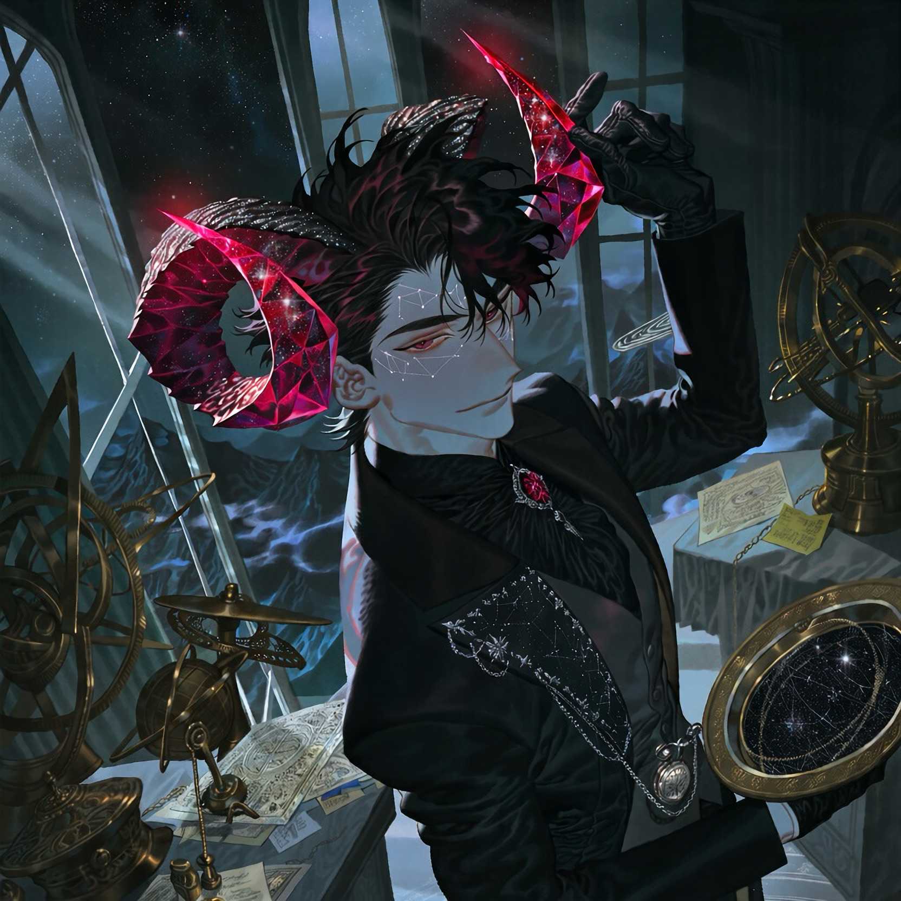

CHARACTER RECORD / 037STATUS: AVAILABLE

✦IMAGE
NOT FOUND
NOT FOUND
ケイルガーン
✦ WITH OUTFIT服装込み
PROMPT DATATXT / 037
masterpiece, best quality, ultra detailed, intricate character design, gothic fantasy, cinematic lighting,
1.5::boy, adult male, capricorn motif, zodiac-inspired character, mysterious celestial being, elegant and aloof demeanor::,
1.5::a pair of large gemstone horns, curved ram horns resembling polished precious stones, faceted garnet crystals, deep crimson translucent crystal tips, black obsidian horn bases, intricate mineral inclusions, tiny stars suspended inside the horns, internal ruby-like glow, sharp crystalline facets reflecting light, symmetrical horn placement, unmistakably gemstone horns::,
1.3::human-like face, pale cool-toned skin, narrow wine-red eyes, subtle golden flecks in the irises, thin well-defined eyebrows, sharp nose, elegant angular jawline, composed expression, pointed ears, faint constellation markings around the temples::,
1.4::short black hair with a subtle burgundy sheen, layered cropped hairstyle, slightly tousled crown, neat tapered sides, delicate strands framing the forehead::,
1.4::ornate black high-collar coat, tailored long coat with split tails, fitted charcoal waistcoat, black silk shirt, garnet gemstone brooch, fine silver embroidery depicting constellations, asymmetrical lapel, fitted gloves, decorative chain connecting to a pocket watch, dark tailored trousers, polished black boots, celestial antique fashion, luxurious velvet and brocade textures::,
1.3::black, deep garnet red, antique silver, restrained gold accents, sophisticated gothic elegance, zodiac symbols subtly integrated into accessories, refined silhouette::,
PROMPT NOT ENTERED